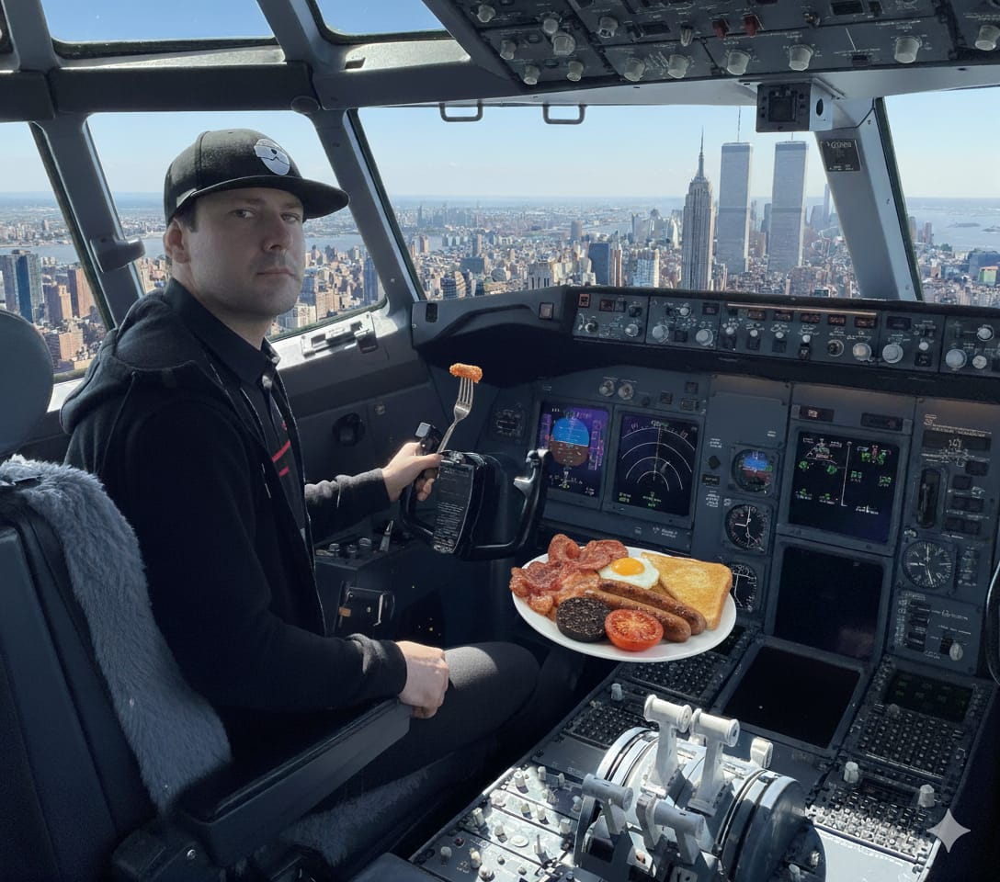
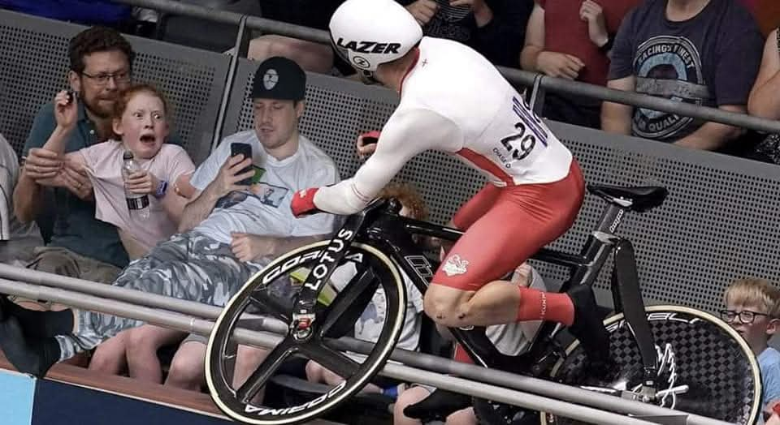
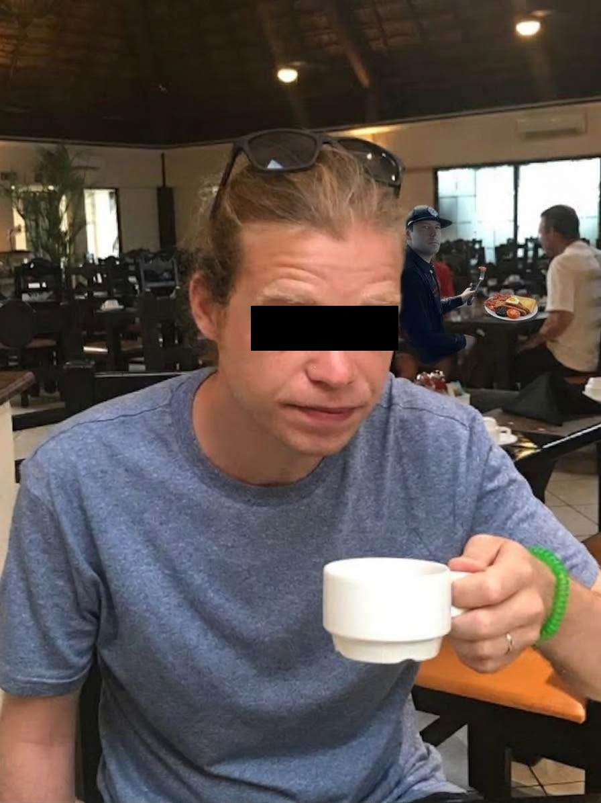
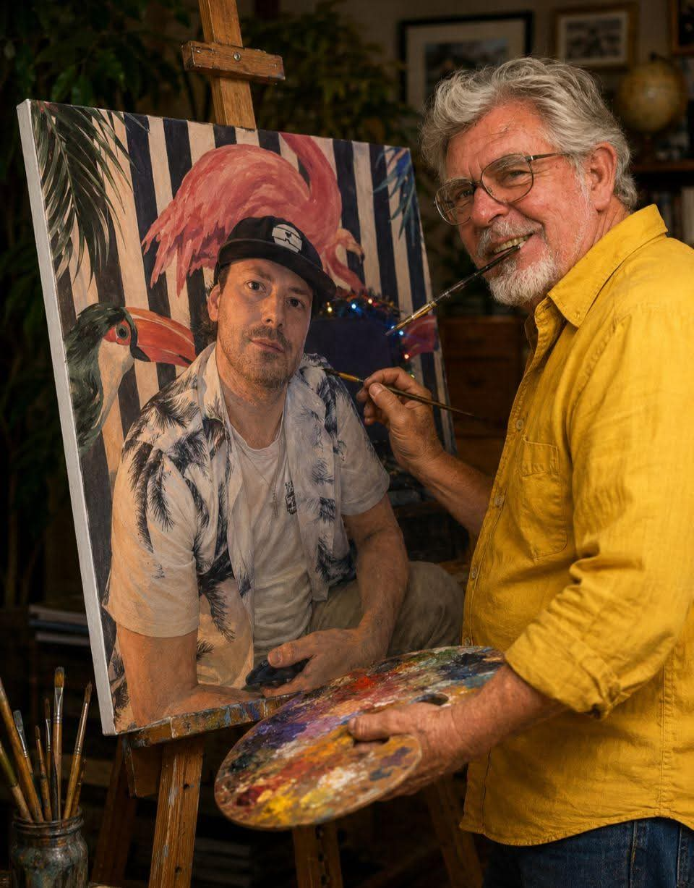
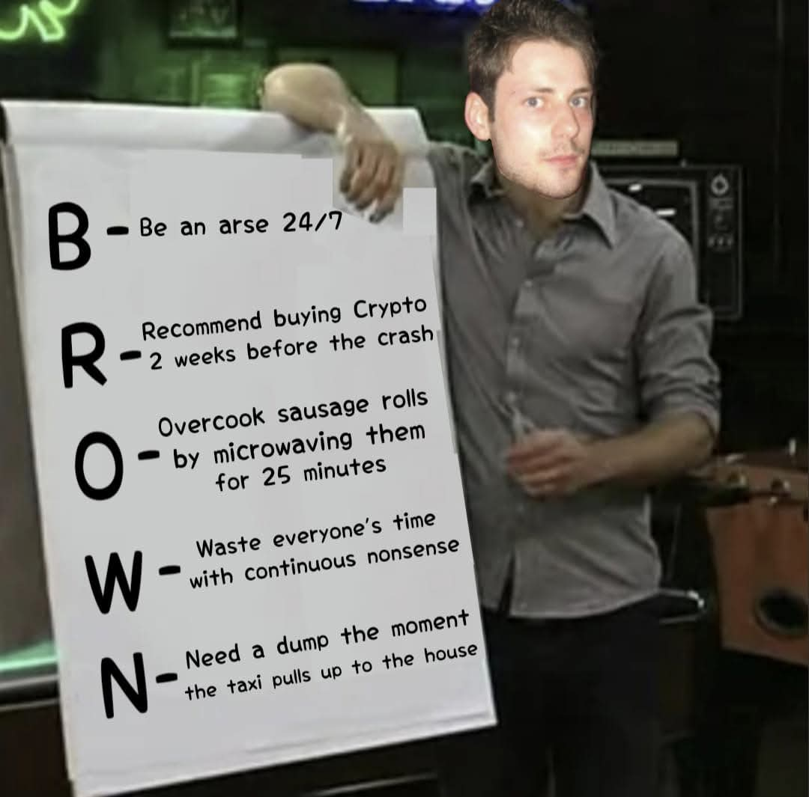
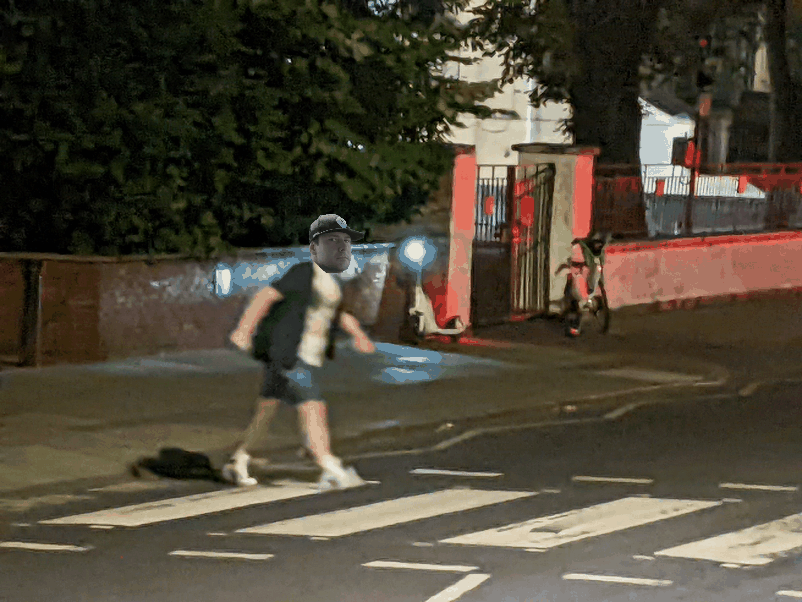

Welcome to isthatbrown.com. The only site dedicated to answering the one question humanity has been asking for centuries. Is That Brown?

In the early hours of September 11, 2001, a heavily intoxicated man stole an aircraft in the New York area. Though the plane was eventually grounded, questions remained: how many lives could have been saved if key authorities hadn't been preoccupied with Browns nonsense. This photo was later recovered from a hard drive found in a bin outside Brown's.

No evidence tied Brown to the horrific events at Steve’s bike track. Yet, 98% of people at the scene blamed a man matching his exact description. Three days after the inquiry was closed, this photograph finally emerged.

This is a man enjoying a cup of tea while on holiday with his family. A few moments after the photo was taken, things took a turn for the worse. Everyone in the resort was found either severely injured or dead. The only person unaccounted for after the police arrived was the suspicious-looking man in the background.

This image frequently appeared on illicit dark web platforms. Despite exhaustive searches across numerous properties, authorities failed to locate the original portrait, leading them to believe it had been destroyed. Rolf maintained his denial of any involvement with Brown until his death.

As part of his court-ordered community service, Brown was assigned to mentor inner-city youths. This photo was taken during one of his sessions.

In 2019, a CCTV camera captured footage of a man matching Brown's description on Abbey Road. The footage was later released to the public, sparking widespread speculation about his involvement in various incidents.